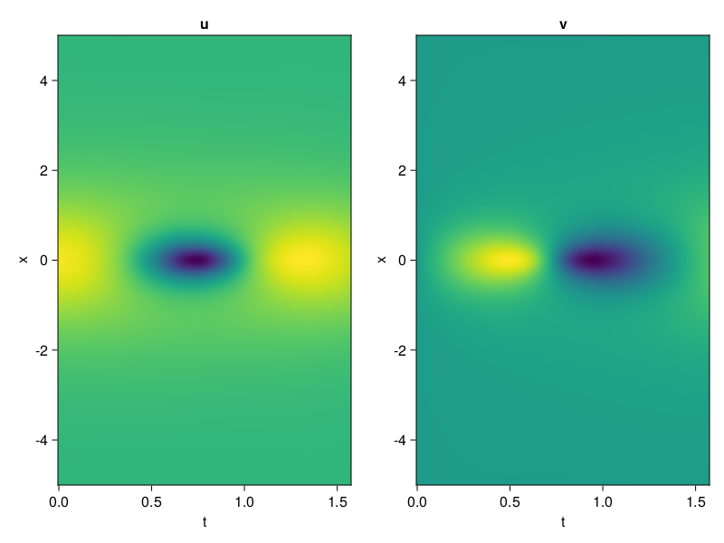
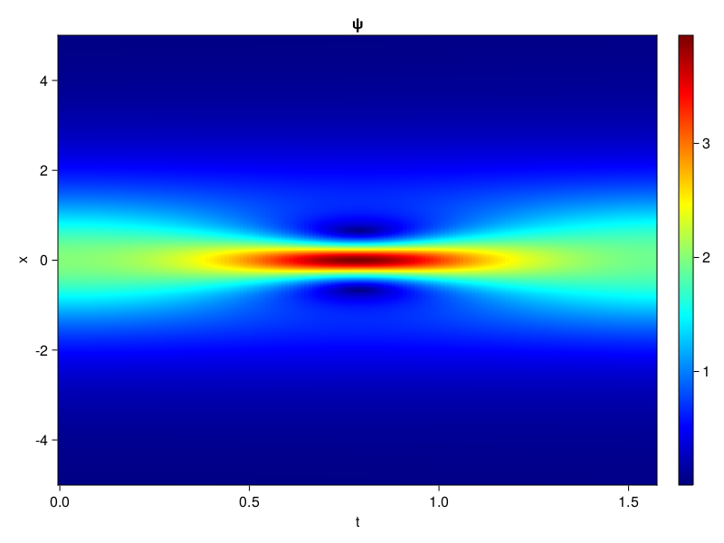
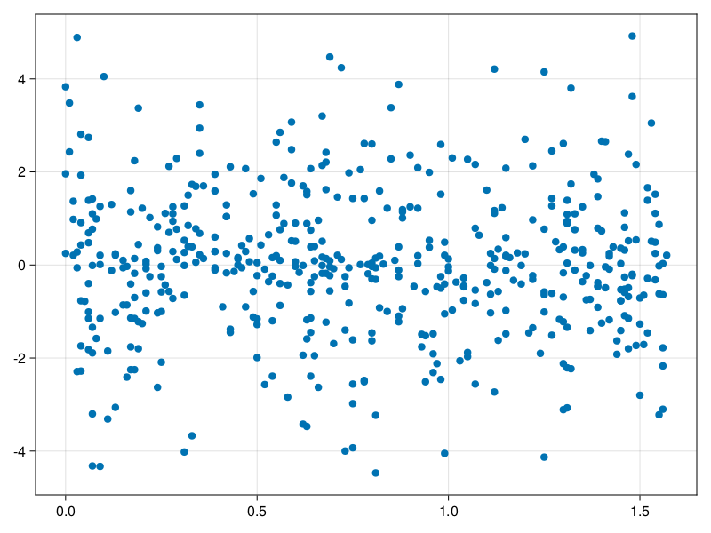

Schrödinger equation
The nonlinear Shrödinger equation is given by
\[\mathrm{i} \partial_t \psi=-\frac{1}{2} \sigma \partial_{x x} \psi-\beta|\psi|^2 \psi\]
Let $\sigma=\beta=1, \psi=u+v i$, the equation can be transformed into a system of partial differential equations
using ModelingToolkit, IntervalSets, Sophon, CairoMakie
using Optimization, OptimizationOptimJL
@parameters x,t
@variables u(..), v(..)
Dₜ = Differential(t)
Dₓ² = Differential(x)^2
eqs=[Dₜ(u(x,t)) ~ -Dₓ²(v(x,t))/2 - (abs2(v(x,t)) + abs2(u(x,t))) * v(x,t),
Dₜ(v(x,t)) ~ Dₓ²(u(x,t))/2 + (abs2(v(x,t)) + abs2(u(x,t))) * u(x,t)]
bcs = [u(x, 0.0) ~ 2sech(x),
v(x, 0.0) ~ 0.0,
u(-5.0, t) ~ u(5.0, t),
v(-5.0, t) ~ v(5.0, t)]
domains = [x ∈ Interval(-5.0, 5.0),
t ∈ Interval(0.0, π/2)]
@named pde_system = PDESystem(eqs, bcs, domains, [x,t], [u(x,t),v(x,t)])\[ \begin{align} \frac{\mathrm{d}}{\mathrm{d}t} u\left( x, t \right) =& - \frac{1}{2} \frac{\mathrm{d}}{\mathrm{d}x} \frac{\mathrm{d}}{\mathrm{d}x} v\left( x, t \right) - \left( \left|u\left( x, t \right)\right|^{2} + \left|v\left( x, t \right)\right|^{2} \right) v\left( x, t \right) \\ \frac{\mathrm{d}}{\mathrm{d}t} v\left( x, t \right) =& \frac{1}{2} \frac{\mathrm{d}}{\mathrm{d}x} \frac{\mathrm{d}}{\mathrm{d}x} u\left( x, t \right) + \left( \left|u\left( x, t \right)\right|^{2} + \left|v\left( x, t \right)\right|^{2} \right) u\left( x, t \right) \end{align} \]
pinn = PINN(u = Siren(2,1; hidden_dims=16,num_layers=4, omega = 1.0),
v = Siren(2,1; hidden_dims=16,num_layers=4, omega = 1.0))
sampler = QuasiRandomSampler(500, (200,200,20,20))
strategy = NonAdaptiveTraining(1,(10,10,1,1))
prob = Sophon.discretize(pde_system, pinn, sampler, strategy)OptimizationProblem. In-place: true
u0: ComponentVector{Float64}(u = (layer_1 = (weight = [-0.22501665353775024 -0.027475297451019287; -0.40770941972732544 -0.16474395990371704; … ; -0.32723772525787354 -0.41887998580932617; -0.3991689682006836 -0.021586835384368896], bias = [0.0; 0.0; … ; 0.0; 0.0;;]), layer_2 = (weight = [0.5241067409515381 -0.30731603503227234 … -0.02210191637277603 0.418293833732605; 0.15172265470027924 0.337195485830307 … -0.18279911577701569 0.4301326274871826; … ; 0.43905800580978394 0.5102328062057495 … 0.14592109620571136 0.5451217293739319; 0.09417558461427689 -0.544202446937561 … -0.202930748462677 -0.43131616711616516], bias = [0.0; 0.0; … ; 0.0; 0.0;;]), layer_3 = (weight = [0.17835316061973572 0.3156142234802246 … -0.06305810809135437 0.043177153915166855; -0.37554264068603516 0.2049022763967514 … -0.10491175949573517 -0.09690864384174347; … ; -0.45500797033309937 0.16769589483737946 … -0.18585871160030365 -0.31469228863716125; 0.42009344696998596 -0.1613156497478485 … 0.516119122505188 0.3260200023651123], bias = [0.0; 0.0; … ; 0.0; 0.0;;]), layer_4 = (weight = [-0.4613781273365021 0.3190144896507263 … -0.4375961720943451 -0.16633370518684387; 0.024441435933113098 0.16829493641853333 … 0.23172439634799957 0.6062366962432861; … ; -0.5730732679367065 -0.06389330327510834 … -0.5715882778167725 -0.17962834239006042; 0.1603683978319168 0.5944987535476685 … 0.14516831934452057 -0.31078362464904785], bias = [0.0; 0.0; … ; 0.0; 0.0;;]), layer_5 = (weight = [0.5824121236801147 0.034637268632650375 … -0.24872738122940063 0.20563015341758728], bias = [0.0;;])), v = (layer_1 = (weight = [-0.10234355926513672 0.2327623963356018; -0.3858031630516052 0.37923669815063477; … ; 0.31344687938690186 -0.40126240253448486; -0.4418540596961975 -0.21349263191223145], bias = [0.0; 0.0; … ; 0.0; 0.0;;]), layer_2 = (weight = [0.16142697632312775 -0.6096277236938477 … 0.3602026700973511 -0.2942289412021637; 0.44218069314956665 -0.5938981175422668 … -0.2039186656475067 0.37904366850852966; … ; 0.07569025456905365 -0.0009109729435294867 … -0.036001864820718765 -0.3851208984851837; 0.009669570252299309 -0.2878904640674591 … 0.4686300754547119 0.31894558668136597], bias = [0.0; 0.0; … ; 0.0; 0.0;;]), layer_3 = (weight = [-0.5515689849853516 0.1464504897594452 … 0.05821554735302925 -0.29938167333602905; -0.03741186857223511 -0.3233932852745056 … -0.2691601514816284 0.524796187877655; … ; -0.181557297706604 0.5428543090820312 … 0.5909184217453003 0.20528610050678253; -0.28481510281562805 0.28120625019073486 … 0.13111622631549835 0.3351956307888031], bias = [0.0; 0.0; … ; 0.0; 0.0;;]), layer_4 = (weight = [0.05660843849182129 -0.35859060287475586 … -0.23797696828842163 -0.04286712035536766; -0.5429304838180542 -0.19245721399784088 … 0.27524128556251526 0.3412327170372009; … ; -0.24357032775878906 -0.36642131209373474 … -0.2831903100013733 0.45115435123443604; -0.4999549388885498 0.2687941789627075 … -0.6123121976852417 0.07310808449983597], bias = [0.0; 0.0; … ; 0.0; 0.0;;]), layer_5 = (weight = [-0.00035324931377545 -0.20249463617801666 … -0.3616468608379364 -0.019541060552001], bias = [0.0;;])))Now we train the neural nets and resample data while training.
function train(pde_system, prob, sampler, strategy, resample_period = 500, n=10)
bfgs = BFGS()
res = Optimization.solve(prob, bfgs; maxiters=2000)
for i in 1:n
data = Sophon.sample(pde_system, sampler)
prob = remake(prob; u0=res.u, p=data)
res = Optimization.solve(prob, bfgs; maxiters=resample_period)
end
return res
end
res = train(pde_system, prob, sampler, strategy)u: ComponentVector{Float64}(u = (layer_1 = (weight = [-0.4668398735884286 -0.00927943893356086; -0.36293481775953634 -0.1934846373207208; … ; -0.49922339589735987 -0.6836133545855686; -0.24337787767228214 -0.046482945647875314], bias = [0.042593692027979586; -0.08035350871295129; … ; 0.27106790129407826; -0.004108478050775675;;]), layer_2 = (weight = [0.4682313529447003 -0.4049699704019061 … 0.0011757345698960064 0.5275921594991833; 0.024789446328998835 0.33393539894767044 … -0.03632400768675732 0.3456256405066661; … ; 0.6623718564165256 0.526779977373783 … -0.2078440111393326 0.6917850499141336; 0.05646846271377929 -0.5644157995366186 … -0.2257388386853337 -0.4030362246840824], bias = [-0.22162654243480492; -0.033404278715167796; … ; 0.1439411609481921; -0.16724967012450648;;]), layer_3 = (weight = [0.40344068100210956 0.2787623585089222 … -0.20218424849495345 0.23681070333604412; -0.6365943602141643 0.2620363163303886 … -0.29864811153617715 0.0658064282330658; … ; -0.41312775239591537 -0.023676932625272696 … 0.11501474846832835 -0.4994843267841632; 0.8786436681801808 -0.19052016091391172 … 0.3512111542404137 0.008043446979497661], bias = [-0.15752078020470342; -0.028696428550014468; … ; -0.20584897213834208; -0.030422832327387;;]), layer_4 = (weight = [-0.5071440521002682 0.6138904380762341 … -0.7853118362823386 -1.223157790364484; 0.10455020103410455 -0.15537205506822116 … 0.05066340855905114 0.938652569259072; … ; -0.7241278680565157 -0.07214598488844487 … -0.3798180662118162 0.004811331202676541; -0.14657285737099435 0.5118893280615464 … 0.06295310400928272 -0.16986780274346436], bias = [0.2239968368682163; -0.01652964414433216; … ; -0.08669899071940253; 0.10717669453082333;;]), layer_5 = (weight = [0.3446950952555614 0.6317607823134964 … -0.07342734714274235 0.9504899017710613], bias = [0.0028077571962851888;;])), v = (layer_1 = (weight = [-0.3089921058902134 0.11971038558901266; -1.2498909807877054 1.1934586809730934; … ; 0.3993210360034564 -0.21222452574616074; -1.1426799268358228 -0.31996522924632254], bias = [-0.035227932241594574; -0.6259881177060946; … ; -0.11817214009630769; 0.1987511443506207;;]), layer_2 = (weight = [-0.3943745892275608 -0.8336499992953752 … 0.7924653488121803 -0.7105646453123221; 0.4822885192887501 -0.3319052270344744 … -0.08253428242949247 0.40412739486579735; … ; -0.24791582333722345 0.039844159730736455 … 0.26358316175210306 -0.3893770594375758; -0.16145788056446492 -0.08495158006484056 … 0.7362316153432993 -0.023372391562425567], bias = [-0.13061439403915354; 0.21930077866022257; … ; 0.21665802646315166; 0.01816357799400331;;]), layer_3 = (weight = [-0.062011921557710854 -0.243419956586314 … -0.16882357663811637 -0.5236496689591498; -0.05397973314086144 -0.13120687909779738 … -0.28749637199297023 0.21145255643161096; … ; -0.1260427825155676 0.7503674572936094 … 0.05255994547163265 0.20426181782616157; 0.2434955839716992 0.6322211657113638 … 0.1940358222162207 0.4456187186670542], bias = [-0.056953243445618196; -0.13770899528638397; … ; -0.1884956661101682; 0.19846670161120053;;]), layer_4 = (weight = [0.13965815771777898 -0.6167934310109887 … -0.03336946381707576 -0.11356976364680688; -0.5452355882626468 -0.2132753804557057 … 0.3040500678658498 0.5259082907599725; … ; -0.4704277209512287 -0.16475175240038684 … -0.5569743840746325 0.28186927127987893; -0.41145256010264497 0.18936384068891593 … -0.7341827898285541 0.14015631318946953], bias = [0.2475085679290225; 0.03545428389203614; … ; -0.05640729402760675; 0.17077858436326426;;]), layer_5 = (weight = [0.7805353329552482 0.05647554479927938 … -1.1512061708484074 0.060732896290861385], bias = [-0.13801118035496834;;])))phi = pinn.phi
ps = res.u
xs, ts= [infimum(d.domain):0.01:supremum(d.domain) for d in pde_system.domain]
u = [sum(phi.u(([x,t]), ps.u)) for x in xs, t in ts]
v = [sum(phi.v(([x,t]), ps.v)) for x in xs, t in ts]
ψ = @. sqrt(u^2+ v^2)
axis = (xlabel="t", ylabel="x", title="u")
fig, ax1, hm1 = heatmap(ts, xs, u', axis=axis)
ax2, hm2= heatmap(fig[1, end+1], ts, xs, v', axis= merge(axis, (; title="v")))
display(fig)
axis = (xlabel="t", ylabel="x", title="ψ")
fig, ax1, hm1 = heatmap(ts, xs, ψ', axis=axis, colormap=:jet)
Colorbar(fig[:, end+1], hm1)
display(fig)
Customize Sampling
Bascially any sampling method is supportted. For example we can sample data according to the predicted solution.
using StatsBase
data = vec([[x, t] for x in xs, t in ts])
wv = vec(ψ)
new_data = wsample(data, wv, 500)
new_data = reduce(hcat, new_data)
fig, ax = scatter(new_data[2,:], new_data[1,:])
prob.p[1] = new_data
prob.p[2] = new_data
prob = remake(prob; u0 = res.u)
# res = Optimization.solve(prob, bfgs; maxiters=1000)OptimizationProblem. In-place: true
u0: ComponentVector{Float64}(u = (layer_1 = (weight = [-0.4668398735884286 -0.00927943893356086; -0.36293481775953634 -0.1934846373207208; … ; -0.49922339589735987 -0.6836133545855686; -0.24337787767228214 -0.046482945647875314], bias = [0.042593692027979586; -0.08035350871295129; … ; 0.27106790129407826; -0.004108478050775675;;]), layer_2 = (weight = [0.4682313529447003 -0.4049699704019061 … 0.0011757345698960064 0.5275921594991833; 0.024789446328998835 0.33393539894767044 … -0.03632400768675732 0.3456256405066661; … ; 0.6623718564165256 0.526779977373783 … -0.2078440111393326 0.6917850499141336; 0.05646846271377929 -0.5644157995366186 … -0.2257388386853337 -0.4030362246840824], bias = [-0.22162654243480492; -0.033404278715167796; … ; 0.1439411609481921; -0.16724967012450648;;]), layer_3 = (weight = [0.40344068100210956 0.2787623585089222 … -0.20218424849495345 0.23681070333604412; -0.6365943602141643 0.2620363163303886 … -0.29864811153617715 0.0658064282330658; … ; -0.41312775239591537 -0.023676932625272696 … 0.11501474846832835 -0.4994843267841632; 0.8786436681801808 -0.19052016091391172 … 0.3512111542404137 0.008043446979497661], bias = [-0.15752078020470342; -0.028696428550014468; … ; -0.20584897213834208; -0.030422832327387;;]), layer_4 = (weight = [-0.5071440521002682 0.6138904380762341 … -0.7853118362823386 -1.223157790364484; 0.10455020103410455 -0.15537205506822116 … 0.05066340855905114 0.938652569259072; … ; -0.7241278680565157 -0.07214598488844487 … -0.3798180662118162 0.004811331202676541; -0.14657285737099435 0.5118893280615464 … 0.06295310400928272 -0.16986780274346436], bias = [0.2239968368682163; -0.01652964414433216; … ; -0.08669899071940253; 0.10717669453082333;;]), layer_5 = (weight = [0.3446950952555614 0.6317607823134964 … -0.07342734714274235 0.9504899017710613], bias = [0.0028077571962851888;;])), v = (layer_1 = (weight = [-0.3089921058902134 0.11971038558901266; -1.2498909807877054 1.1934586809730934; … ; 0.3993210360034564 -0.21222452574616074; -1.1426799268358228 -0.31996522924632254], bias = [-0.035227932241594574; -0.6259881177060946; … ; -0.11817214009630769; 0.1987511443506207;;]), layer_2 = (weight = [-0.3943745892275608 -0.8336499992953752 … 0.7924653488121803 -0.7105646453123221; 0.4822885192887501 -0.3319052270344744 … -0.08253428242949247 0.40412739486579735; … ; -0.24791582333722345 0.039844159730736455 … 0.26358316175210306 -0.3893770594375758; -0.16145788056446492 -0.08495158006484056 … 0.7362316153432993 -0.023372391562425567], bias = [-0.13061439403915354; 0.21930077866022257; … ; 0.21665802646315166; 0.01816357799400331;;]), layer_3 = (weight = [-0.062011921557710854 -0.243419956586314 … -0.16882357663811637 -0.5236496689591498; -0.05397973314086144 -0.13120687909779738 … -0.28749637199297023 0.21145255643161096; … ; -0.1260427825155676 0.7503674572936094 … 0.05255994547163265 0.20426181782616157; 0.2434955839716992 0.6322211657113638 … 0.1940358222162207 0.4456187186670542], bias = [-0.056953243445618196; -0.13770899528638397; … ; -0.1884956661101682; 0.19846670161120053;;]), layer_4 = (weight = [0.13965815771777898 -0.6167934310109887 … -0.03336946381707576 -0.11356976364680688; -0.5452355882626468 -0.2132753804557057 … 0.3040500678658498 0.5259082907599725; … ; -0.4704277209512287 -0.16475175240038684 … -0.5569743840746325 0.28186927127987893; -0.41145256010264497 0.18936384068891593 … -0.7341827898285541 0.14015631318946953], bias = [0.2475085679290225; 0.03545428389203614; … ; -0.05640729402760675; 0.17077858436326426;;]), layer_5 = (weight = [0.7805353329552482 0.05647554479927938 … -1.1512061708484074 0.060732896290861385], bias = [-0.13801118035496834;;])))